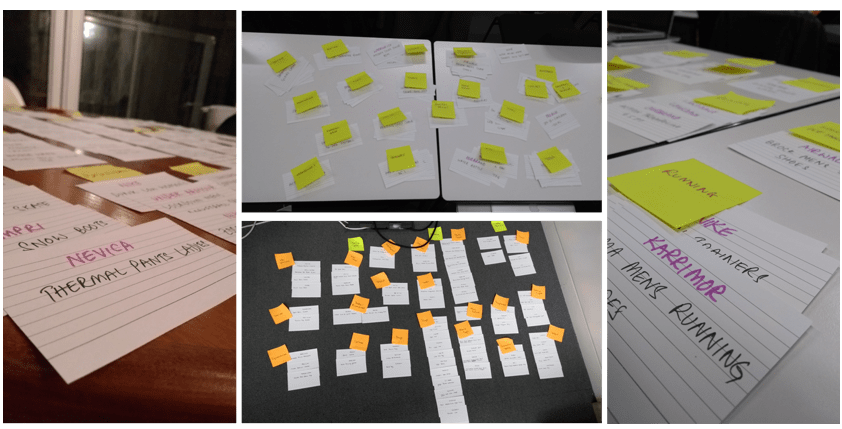

Edge Sporting : E-commerce Website UX Design
Creating an intuitive navigation system and online shopping experience — with a “small store“ appeal
OVERVIEW
I created a new e-commerce website for Edge Sporting Goods, a local independent sporting goods store. The new website met the key objectives of the brief by :
- Showcasing their curated products
- Establishing their brand, and
- Providing the users with a simple and intuitive online shopping experience
DURATION:
2 week design sprint
MY ROLE:
- User Research, Wireframing & Prototyping, Visual Design, Usability Testing
METHODOLOGY:
- User Research
- Competitive Analysis
- Information Architecture
- Sketching
- Rapid Ideation & Wireframing
- Digital Prototyping
PROJECT BRIEF
The concept brief from Edge Sporting Goods articulated the store’s history, values and unique philosophy. Unlike e-commerce retailers such as Amazon, they offered a highly-curated inventory, focusing on hand-picked quality over quantity.
The new e-commerce website had to:
- Showcase their products
- Maintain their brand image and ‘small shop’ appeal
- Emphasise their customer-first philosophy
THE CHALLENGE
My challenge was to design a clickable prototype of an e-commerce website that met the requirements of the brief.
The client also provided 3 representative user personas to help me develop specific project deliverables.
RESEARCH & DISCOVERY STAGE
I kicked off the week by learning some fundamental principles of lean UX and Dieter Rams’ good design that I could apply to my design process. These helped me quickly streamline my design concepts, and improve the design with every iteration.
COMPETITIVE ANALYSIS
I began analysing some of Edge’s key competitors like JD Sports, Decathlon, InterSports and Sports Direct. I also visited some of the physical stores to observe their product placement and customer interaction.
Further analysis of indirect competitors like Amazon and Argos offered insights on their mass appeal to consumers.
My overall the impression of these industry leaders was that they were huge, impersonal and generic.
This was where Edge’s “small store” appeal could be a real differentiator and this informed my subsequent design decisions.
USER RESEARCH
From the 3 user personas provided in the brief, I selected Max as my key persona as I believed that addressing his goals and frustrations in my design would enable me to look deeper into the user’s emotional journey and understand many of the nuances in the user flow.
The details in the persona helped flesh out his personality, key interests, pain points and goals.
I then interviewed a few more users who were similar in needs and demographics to my persona — this gave me further insights on how they would use the website to solve their problem.
- Quick & efficient shopping is key
- Quality is very important for business purchases
- Company values matter
This initial user research and competitive analysis helped inform and refine my design decisions. It also helped me understand the main user problem, desired solution and outcome.
DEFINING & IDEATING
INFORMATION ARCHITECTURE
A key element of the quick and efficient shopping experience that my users wanted was a simple and intuitive website navigation system.
To do this, I used the card sorting technique (with open and closed sorts) to organise the store’s product inventory.
These sorting exercises helped me build a website sitemap that was logical and clear.
USER JOURNEY
In my next stage, I began visualising the actual user journey for my persona Max from the problem right through to the outcome.
I then used the Experience Map visualising tool to flesh this out further and include user’s tasks and emotional journey.
USER FLOW
I took this to the logical next step via iterations and user testing and drafted a user flow within the website that would solve the user problem.
DEVELOPING THE SOLUTION
SCREEN DESIGN & ITERATIONS
A rapid group brainstorming session in a design studio format generated lots of quick and interesting ideas on screen formats.
We picked the website home page and the product page as the key focus areas for the session.

Using these ideas, I then sketched more wireflows of the website screens that would enable my user flow.
Early and continuous feedback from user testing of these wireflows which I took on board were:
- Selection of product categories required too many clicks — I created product panels that could be directly clicked on
- Product page was too crowded — I moved out options like product videos to below the page-fold to ensure that the page focused on the user’s primary product selection journey
DESIGN ITERATIONS - PAPER PROTOTYPES
I was then ready to build a paper prototype of the revised screens and began testing them with multiple users.
General feedback (navigation between screens not clear) as well as specific feedback (what’s that floating button?) helped evolve my designs further.
DIGITAL PROTOTYPING
I then transferred these to a low-fidelity digital prototype which underwent further usability testing.

The user feedback at this stage helped me take my designs up a notch through additional screens and functionality to ensure they offered an intuitive user flow with minimal friction.
Improving the fidelity and moving it to a clickable prototype brought this closer to the actual user online experience.
REFLECTIONS
Weeks 2 and 3 of the GA UXDI course were an incredible learning experience. While I am not new to e-commerce (I ran an online kids’ t-shirt store before), the understanding and application of fundamental UX design principles combined with some new tools have enhanced my skills and thinking immensely.
I have learnt a lot, including the benefit of collaborative brainstorming and continuous user testing.
IF WE HAD MORE TIME....
There were some interesting discussions and feedback from user interviews and many user tests which I’d like to explore further and incorporate in the next version of my prototype. A couple of these are:
- Wholesale / trade pricing
- A simpler checkout process with clearer call-to-action buttons